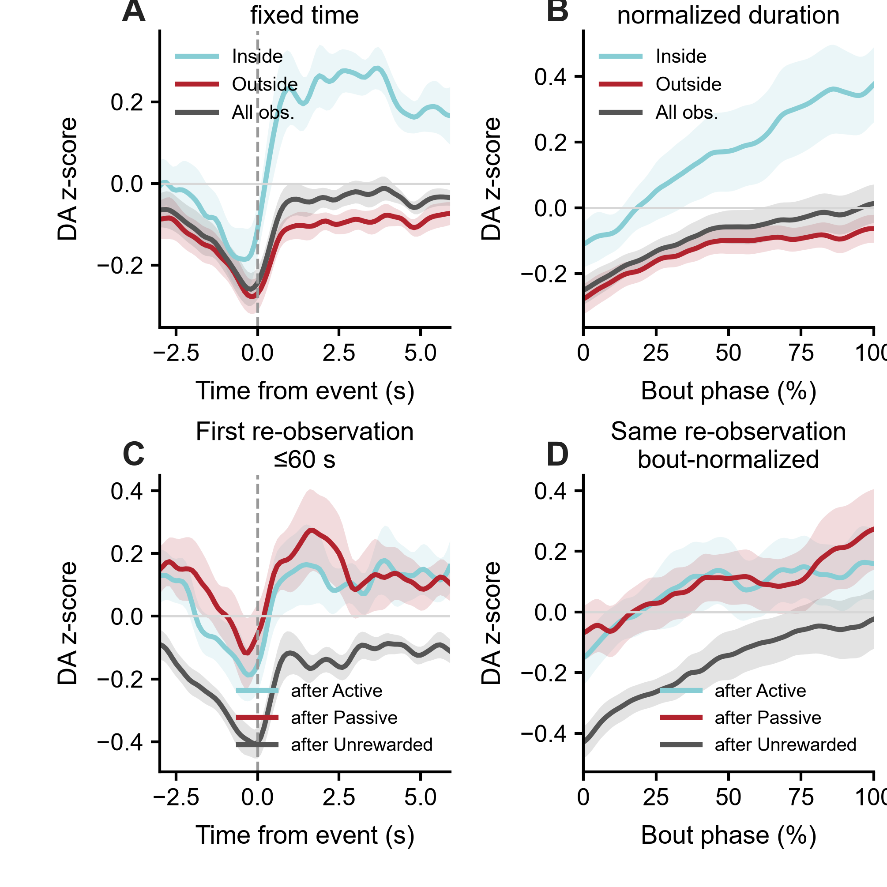

A mechanistic account of social learning: how mice decide when to observe, turn social information into action, and learn from the outcome
Social learning emerges here as a closed computation rather than a single response: animals decide when another animal is worth observing, integrate social experience across time, convert sampled content into their own feeding, and use VTA-dependent outcome signals to update future sampling. SLM provides an interpretable mechanism, SWM independently tests and extends it, and causal and external datasets probe how far the computation holds.
Mechanistic SLM + generic choice persistence is the default behavioral model; it beats Current+CK in 20/27 animals and TinyRNN in 23/27.
Prospective efficacy adds beyond all 13 current social cues. Scrubbing the SLM-coordinate subspace selectively impairs Observe policy relative to matched random subspaces.
VTA dopamine follows episode chronology: pre-outcome sampling policy, sampling action-prediction error, then post-outcome reward/social-credit update.
JAWS lowers the post-outcome Active social-credit update in 10/10 animals and accumulated Active credit in 9/10, while gross observation is preserved.
In learners, observing demonstrator feeding raises native Feed hazard within 3 s; the state-residualized increase remains +6.09 pp.
Multiscale state clears stronger matched models in 8/10 held-out Human subjects and 8/10 held-out Rats. Primate results remain explicitly nested or architectural evidence.
The page follows the biological problem in order: acquisition → information value → memory → default SLM → data-driven SWM → content-to-action conversion → neural implementation → causal decomposition → mechanistic synthesis → later generalization → cross-task evidence.
Mice learn to turn social observation into their own action
SRI rises in 35/40 animals; live social input, visual access and familiarity constrain successful acquisition.
Social information is sampled when it is useful
Held-out social-state value depends on current self-state and changes with training.
Social learning keeps memory on several timescales
Next-decision switching, ~4.5–7.5 min history and a transient cross-day prior are independently recovered.
A compact mechanistic model explains the sampling policy
The mechanistic state plus generic persistence clears weak/classical baselines while retaining experimentally testable coordinates.
A data-driven world model independently validates and extends the mechanism
An SLM-like subspace contributes to Observe policy; prospective social efficacy is a distinct social-content-dependent variable.
What is observed changes the learner’s own feeding
Demonstrator-feeding content produces a short-latency increase in the learner’s native Feed hazard.
Dopamine follows the social-learning computation in real time
Q/RPE can explain Post DA; the pre-outcome Early policy and Middle APE require the broader temporal SLM account.
Vision and dopamine play different causal roles
Visual Block limits useful content; JAWS weakens post-outcome Active social-credit teaching while gross sampling remains.
The results form one closed-loop learning architecture
Observe policy controls information acquisition; native Feed is self-state dominated and receives a short-lived sampled-content signal.
The same rules can generate social-learning behavior
A closed-loop SLM regenerates broad learning trajectories and behavioral-state organization; recurrent-agent policy is compactly described by SLM coordinates.
The learned variables predict behavior in new tasks
Social credit adds behavior-independent prediction for novel-food initiation; APE strongly maps to later shock reactivity without demonstrated superiority over simple behavior.
Related computations recur across species and social tasks
Human and Rat give the strongest independent-unit external support for multiscale state; other computations currently have component, nested or architectural support.
Mice learn not just to watch others, but to turn social observation into their own action
Across training, the dominant change is not simply more looking. Animals become better at converting a socially informative observation into their own successful feeding action.

Swipe the table horizontally for all columns →
Foundational behavioral controls
| Discovery | Result | Interpretation | Evidence type |
|---|---|---|---|
| Acquisition | strict learner SRI ≈1.07→4.58; older n=13 lineage .67±.34→2.82±.44, P<.001 | Social coordination strengthens across training. | learner cohort |
| Live social input | Live demonstrator > simulated demonstrator; simulated SRI ≈.499±.258, n=13, P<.001. | Live-social interaction carries the effective teaching signal. | live-social control |
| Visual access | opaque barrier ≈69% reduction; current VB 3.67→1.08, 23/25 lower | successful social coordination requires visual information | historical + current visual-access evidence |
| Familiarity | unfamiliar partner reduces SRI ≈44%, n=11, P<.05 | social evidence is weighted by partner identity/familiarity | historical familiarity evidence |
| Observation phenotype | Socially directed observation rises with training. | Learning refines selective social observation. | training-dependent observation |
| Conversion | Learner Observe→Feed ≈.431→.641; learning progress β≈+.126. | Successful learners become more efficient at using sampled social information. | learner cohort |
Additional behavioral analyses
Active orienting carries predictive social information
Demonstrator feeding/spout state is highly predictive, but observer-side head direction, facing, angular velocity, social turn and social gaze nearly match the all-feature classifier. Social gaze is the strongest single observer-side feature in the manuscript lineage.
Learning reweights an existing behavioral manifold
Successful active-reward bouts are preceded by distinct states. The global manifold remains broadly stable, while occupancy shifts toward socially informative motifs with training.
Conversion progress tracks learning
Conversion progress correlates with ΔSRI (ρ≈.426, P=.0086), directly linking successful information-to-action transfer to behavioral learning.
Animals seek social information when it is useful for deciding what to do next
The value of another animal’s state is not fixed. It depends on the observer’s own situation and on what the animal has learned, showing that social observation is used as an adaptive decision resource.
Full social state versus the observer-only baseline: median +0.00365 nats/decision; rrb=.725; P=.000268.
Median late−early = −0.00378 nats/decision; rrb=−.619; P=.00194.
Social information is most useful when the observer is farther from its own spout.

Social experience is integrated across seconds, minutes and days rather than stored in one memory trace
A single outcome immediately resets the need for further social-information sampling, recent episodes accumulate over minutes, and part of the learned state persists into the next session.
Relative to Unrewarded, the next re-entry into Observe falls by 9.0 pp after Active and 8.3 pp after Passive. In learners, the Active-driven fast-switch contrast grows from 4.3 pp early to 10.8 pp late in training (P=.041).
Selected γ=.95–.97 corresponds to 20–33 events. Multievent history adds ΔNLL=.0348; the best single-exponential eligibility trace adds only ~.0001.
The true chronological day order beats 500 within-animal day shuffles (P=.001996); retaining the previous-day prior improves 29/40 animals (P=.0125).

Supporting simple alternatives to the multiscale state


A compact Social Learning Model explains when mice seek social information and how experience changes that policy
The model compresses current state, recent social history, sampling policy and outcome-specific credit into variables that remain interpretable enough to test directly in neural recordings and causal perturbations.
Prevalence / clock / current linear or nonlinear
Principle: predict choice directly from observed state; no mechanistic learning state is required.
Key parameters: intercept, feature weights, training-fold regularization; nonlinear current-state readouts add flexible feature interactions.
Role: establish what is predictable before introducing a learning rule.
RW / WSLS / Q / asymmetric-Q / forgetting-Q / choice kernel
Principle: maintain a few scalar values or a persistence state and update them after choices/outcomes.
Key parameters: learning rate α; discount/value term γ where applicable; separate positive/negative α for asymmetric-Q; forgetting rate; choice-kernel decay/weight; readout scale.
Role: interpretable reward-learning and perseveration alternatives. Q-family models generate an RPE after outcome.
SLM components → SLM core → default SLM
Principle: current state and multiscale memory determine an Observe policy; sampling generates an APE; outcome then updates source/outcome-specific social credit and value.
Key parameters: multiscale state/decay terms, policy/readout weights, credit/value learning terms. The default behavioral SLM adds one generic choice-persistence branch.
Role: primary mechanistic model; its coordinates are defined before VTA and JAWS tests.
History MLP / full-history MLP / TinyRNN h=3 / LDN
Principle: learn flexible nonlinear history interactions without imposing SLM semantics.
Key parameters: hidden-layer or recurrent weights, hidden dimension, regularization and training hyperparameters selected inside training data.
Role: capacity ceiling and stress test: does generic memory/nonlinearity explain the same behavior?
SWM · Social World Model
Principle: learn a recurrent latent state that predicts future behavioral/social dynamics without supplying the SLM equations.
Key parameters: encoder, recurrent latent dynamics and future/readout heads learned end-to-end.
Role: test whether SLM-like coordinates emerge and whether an additional prospective social-efficacy state exists.
One-row-per-family principles, state/update rule, key parameters, role and comparison scope.
Full behavioral model zoo (all audited rows)
RPE is not a separate behavioral model class: Q-learning rows update value through an RPE. The neural comparison of RPE, policy and APE signals is listed separately in the VTA section.
| Group | Model | Brier ↓ | AUC ↑ | Role |
|---|---|---|---|---|
| simple behavioral baselines | Current nonlinear | 0.1858 | 0.791 | main comparator |
| simple behavioral baselines | Current linear | 0.1942 | 0.771 | main comparator |
| simple behavioral baselines | Previous choice only | 0.2282 | 0.613 | main comparator |
| simple behavioral baselines | Clock only | 0.2449 | 0.582 | main comparator |
| simple behavioral baselines | Constant prevalence | 0.2561 | 0.378 | main comparator |
| classical low-dimensional RL | Choice kernel / perseveration | 0.1901 | 0.781 | main low-complexity RL baseline |
| classical low-dimensional RL | Q-learning + choice kernel | 0.1904 | 0.781 | main low-complexity RL baseline |
| classical low-dimensional RL | Forgetting Q-learning | 0.2037 | 0.749 | main low-complexity RL baseline |
| classical low-dimensional RL | Q-learning (all reward) | 0.2114 | 0.729 | main low-complexity RL baseline |
| classical low-dimensional RL | Asymmetric Q-learning | 0.2128 | 0.722 | main low-complexity RL baseline |
| classical low-dimensional RL | Q-learning (Active reward) | 0.2175 | 0.710 | main low-complexity RL baseline |
| classical low-dimensional RL | Win-stay/lose-shift | 0.2380 | 0.621 | main low-complexity RL baseline |
| classical low-dimensional RL | Rescorla-Wagner | 0.2443 | 0.578 | main low-complexity RL baseline |
| SLM mechanistic components | Feature-Q | 0.1709 | 0.824 | mechanistic ablation/component |
| SLM mechanistic components | Direct policy | 0.1710 | 0.823 | mechanistic ablation/component |
| SLM mechanistic components | Actor-Critic | 0.1711 | 0.823 | mechanistic ablation/component |
| SLM mechanistic components | Common belief | 0.1711 | 0.823 | mechanistic ablation/component |
| integrated Social Learning Model | SLM full | 0.1708 | 0.823 | primary model |
| input-matched strong classical controls | Current + Choice-kernel | 0.1664 | 0.832 | Extended Data strong alternative; mechanistic adjudication |
| input-matched strong classical controls | Current + Q + choice kernel | 0.1667 | 0.832 | Extended Data strong alternative; mechanistic adjudication |
| input-matched strong classical controls | Current + forgetting Q | 0.1722 | 0.821 | Extended Data strong alternative; mechanistic adjudication |
| input-matched strong classical controls | Current + asymmetric Q | 0.1749 | 0.815 | Extended Data strong alternative; mechanistic adjudication |
| input-matched strong classical controls | Current + Q-allreward | 0.1755 | 0.814 | Extended Data strong alternative; mechanistic adjudication |
| input-matched strong classical controls | Current + Q-active | 0.1757 | 0.813 | Extended Data strong alternative; mechanistic adjudication |
| input-matched strong classical controls | Current + WSLS | 0.1859 | 0.790 | Extended Data strong alternative; mechanistic adjudication |
| input-matched strong classical controls | Current + RW-active | 0.1859 | 0.791 | Extended Data strong alternative; mechanistic adjudication |
| parsimonious hybrid behavioral head | SLM + Choice-kernel stack | 0.1654 | 0.834 | optional behavioral head; SLM latent branch remains mechanistic authority |
| additional flexible ceilings | History MLP + formal-all | 0.1637 | 0.837 | flexible capacity ceiling |
| additional flexible ceilings | Current + full-history MLP | 0.1647 | 0.835 | flexible capacity ceiling |
| additional flexible ceilings | LDN v2 | 0.1680 | 0.829 | flexible capacity ceiling |
| additional flexible ceilings | TinyRNN h3 | 0.1680 | 0.829 | flexible capacity ceiling |
| additional flexible ceilings | SLM core + policy + belief | 0.1708 | 0.823 | flexible capacity ceiling |
| additional flexible ceilings | SLM core + policy + Q | 0.1710 | 0.823 | flexible capacity ceiling |
| additional flexible ceilings | SLM core + policy | 0.1710 | 0.823 | flexible capacity ceiling |
| additional flexible ceilings | SLM core + belief | 0.1711 | 0.823 | flexible capacity ceiling |
| additional flexible ceilings | SLM core + Q | 0.1712 | 0.823 | flexible capacity ceiling |
| additional flexible ceilings | SLM core | 0.1712 | 0.823 | flexible capacity ceiling |
| biologically inspired fixed-model baselines | LCNE asym-Q persistent state | 0.1841 | 0.795 | secondary biologically motivated comparator |
| biologically inspired fixed-model baselines | UCL dual controller | 0.1894 | 0.788 | secondary biologically motivated comparator |
| biologically inspired fixed-model baselines | LCNE asym-Q daily state | 0.1909 | 0.778 | secondary biologically motivated comparator |
| biologically inspired fixed-model baselines | 5HT uncertainty state | 0.1931 | 0.773 | secondary biologically motivated comparator |
| biologically inspired fixed-model baselines | 5HT uncertainty global | 0.1960 | 0.766 | secondary biologically motivated comparator |
| biologically inspired fixed-model baselines | Cell deep-RL shallow hetero | 0.2123 | 0.736 | secondary biologically motivated comparator |
| biologically inspired fixed-model baselines | Cell deep-RL deep hetero | 0.2131 | 0.735 | secondary biologically motivated comparator |
| biologically inspired fixed-model baselines | UCL RPE-only | 0.2273 | 0.706 | secondary biologically motivated comparator |
Prevalence, clock, previous choice and current-state baselines establish how much prediction is available before any learning model is introduced.
The mechanistic SLM core beats RW, WSLS, Q-family, forgetting-Q and choice-kernel baselines under the restricted contract.
SLM + generic choice persistence beats Current+CK in 20/27 animals (P=.00169) and TinyRNN in 23/27 (P=1.59×10⁻⁵).
Default SLM and full-history MLP are indistinguishable in the paired held-animal comparison; the MLP serves as a ceiling check.
Across all 40 animals, training-related policy change correlates with SRI gain: Spearman ρ=.453, P=.00337.
Training-related change in |APE| correlates with late SRI: ρ=.383, P=.0146.
Training-related change in |RPE| correlates with the gain in observation-to-successful-action conversion: ρ=.615, P=2.43×10⁻⁵.
Late social-credit separation correlates with the probability of Active success after observation: ρ=.558, P=.000181.

Default behavioral model, APE definition, RPE comparator logic, JAWS terminology and Feed-stage boundaries.

Six-family recovery is 97.2%; focused Feature-Q / policy / actor recovery is 59/60 under the recursively generated learner contract.
A data-driven world model independently recovers the SLM decision structure and reveals an additional prospective social-value signal
SWM is trained without writing the SLM equations into the model. It independently recovers a policy-relevant SLM-like subspace and also learns whether observing now is likely to improve the animal’s later feeding outcome.
SLM pre-event state + previous-choice persistence + all 13 current social cues give AUC=.6247; adding ΔActive raises it to .6391. The gain is positive in 21/27 animals, P=.000843.
Coherent trajectory replacement lowers efficacy AUC .6196→.5609; no-social retraining lowers it to .5715.
SLM-coordinate scrub causes a specific Observe-policy loss beyond 32 matched random subspaces in 26/27 animals; P=5.22×10⁻⁷.
Full SWM predicts future motifs better than an SLM-coordinate-only readout in 27/27 held-out animals.

Supporting SWM controls and benchmark panels


Panel-level current-cue, social-content, decoding, scrub and future-dynamics values.
Held-animal contracts, social-content controls, learning-stage boundary and retired claims.
What the demonstrator is doing—not merely being recently observed—changes the learner’s next feeding decision
After controlling the learner’s current state and simple observation recency, the content of the sampled social event still predicts whether the learner will feed.
The native Feed analysis uses the formal learner cohort; 26 animals contribute both demonstrator-feeding and no-demonstrator-feeding decisions in the ≤3 s contrast.
Within 3 s, Feed hazard is .2273 after observing demonstrator feeding and .1519 after observing no feeding; 17/26 positive, P=.0377.
The effect remains after residualizing a frozen self + current-social model; 17/26 positive, P=.0445.
In animals informative in both analyzed sessions, the raw dem-feed hazard contrast increases from the first to the second session (mean shift +7.74 pp, P=.0448). The residualized session-to-session shift is positive but not significant (P=.243).


Paired first→second analyzed-session raw and state-residualized dem-feed hazard contrasts.
Animal-level log-probability gains for Feed|Dem+, Feed|Dem− and No-Feed|Dem+.
When the SLM rules are run forward, they recreate the local organization of social learning
A predictive model can fit the next choice without capturing the process that generated learning. The closed-loop agent asks whether the fitted policy and update rules can actually regenerate the behavioral organization seen in mice.
Full SLM has the highest trajectory correlation, but Q has a slightly lower RMSE (.1665 vs .1683). Global trajectory therefore provides only weak separation among mechanistic agents.
Full SLM exceeds baseline (.274), Q (.273) and outcome-belief (.246) for the outcome-conditioned strategy kernel and also has the lowest kernel RMSE (.0826).
Full SLM improves occupancy fidelity relative to Q in 24/40 animals (P=.0257) and belief in 25/40 (P=.0130).
Adding SLM coordinates improves policy readout in 5/5 folds under both Active-only and Active+Passive reward ontologies; Brier and NLL also improve in 5/5.

Supporting agent panels


Generative comparator hierarchy, biological scope and recurrent-policy convergence.
Trajectory, local strategy, motif occupancy and recurrent-policy comparator values.
VTA dopamine follows the computation of social learning in sequence—from deciding to observe to learning from the outcome
Before the social outcome is known, dopamine reflects the decision to sample and the surprise associated with that sampling action. After the outcome, dopamine reflects reward/value and social-credit updating.
Sampling-policy effect: r_rb=.810, P=.0469. Q/RPE is ~0 here (r_rb=.048); choice-kernel and Q+CK are negative; TinyRNN is significantly wrong-direction.
Learner-linked APE remains ρ=.667 after conditioning on CK, Q+CK or Q error. Reverse competing-error tests are negative.
SLM RPE and post-outcome social-credit update are positive (r_rb=.867/.956). Q-all RPE is also positive here (r_rb=.867), so Post DA alone does not identify the mechanism.
Held-animal behavior gives Brier=.1911 for APE-only versus .2273 for RPE-only; APE beats RPE in 27/27 animals (P=1.49×10⁻⁸). The dual RPE+APE model improves further in 24/27 animals (P=4.92×10⁻⁷).
Pre-outcome policy P=.0469, middle APE P=.0416, and post-outcome RPE P=.0195; generic Q/RPE is supported only at Post.
Across nine animals, signed RPE+|RPE| gives mean held-out MSE gain=.01518 versus .00544 for signed outcome-vector PE and .00871 with vector magnitudes. Vector terms add no gain after scalar RPE (−.00035, P=1.0).
Passive credit selected from behavior alone outperforms fixed credit=.75 and 1.0 for ActionBout dopamine in 9/9 animals for both comparisons (P=.0039 each).
Fast information demand, RPE/APE dual behavior, VTA timing, error representation, behavior-to-neural transfer and FP-to-dopamine robustness.
Definitions, statistics, evidence tiers and current claim boundaries.


Expand: outcome events, both temporal readouts, observation context and single-event heatmaps



Animal-average curves for outcomes, actual-bout normalization and next-observation conditions.
Paired animal-level tests before observation, after onset and across actual bout phase.
Animal-level Active, Passive and Unrewarded contrasts in fixed post-outcome time and actual bout duration.
Counts and real durations for all authoritative outcomes and the 1,371 common events.
Animal-level curves for high versus low sampling policy, |RPE| and actor update magnitude.
Animal-level tests for real observation, location-matched random moments, inside/outside observation and demonstrator transitions.
Animal-level curves for demonstrator events, random no-observation controls, transitions and the learner's own feeding.
Expand: do the conclusions survive two different FP-to-dopamine readouts?
The two dopamine readouts are positively correlated in every animal (Spearman ρ=.520–.944; median .785), indicating a shared underlying process with different temporal weighting.
On the same events, bout-duration |RPE| remains positive in 7/9 animals but P=.164. Seven of nine animals improve under both definitions, and the baseline-normalized gain difference between readouts is itself not significant (P=.164).
Behavior-selected Passive credit beats fixed .75/1.0 in 9/9 animals for ActionBout (P=.00391) and 7/9 for 0–6 s (P=.0273/.0391). Animal-level advantage is concordant across readouts: ρ=.733 (P=.0246) and ρ=.800 (P=.00963).
Common-event definitions, directions, effect sizes and paired statistics.
Fixed 0–6 s versus actual-bout duration, and which SLM conclusions survive both.


Full VTA signal zoo (fixed temporal axes)
These are candidate computational signals generated by behavioral systems, not a second comparison of complete behavioral agents.
| Candidate family | Early | Middle | Post | Positive & significant |
|---|---|---|---|---|
| SLM | +0.810 · P=0.0469 | +0.667 · P=0.0416 | +0.867 · P=0.0195 | 3/3 |
| Choice kernel | -0.238 · P=0.688 | -0.286 · P=0.769 | +0.467 · P=0.25 | 0/3 |
| TinyRNN | -0.867 · P=0.0195 | -0.548 · P=0.924 | +0.733 · P=0.0547 | 0/3 |
| History MLP | -0.378 · P=0.359 | +0.024 · P=0.488 | -0.911 · P=0.0117 | 0/3 |
| Q-all | +0.048 · P=1 | -0.357 · P=0.82 | +0.867 · P=0.0195 | 1/3 |
| Q + choice kernel | -0.333 · P=0.562 | -0.333 · P=0.805 | +0.467 · P=0.25 | 0/3 |
The study resolves a closed social-learning loop: access information, choose when to sample it, convert it into action, then learn from the outcome
Behavior, modeling, dopamine timing and perturbations converge on four linked operations that together explain how social information changes future behavior.
Useful visual-social information is reduced while gross observation remains broadly available.
Current state and multiscale memory determine when Observe has decision value.
Sampled demonstrator-feeding content produces a short-latency increase in the learner's Feed hazard.
Post-outcome VTA-dependent teaching updates Active social credit and changes future sampling.
Model lesion: information access vs post-outcome teaching

Visual access and VTA teaching are causally distinct steps in the social-learning loop
Blocking useful visual-social information weakens what can be learned from the demonstrator, whereas inhibiting VTA after successful social outcomes weakens the teaching step that updates future social sampling.


Observe→Active falls .320→.193; 8/10 lower, P=.00391.
Noncontingent OFF→ON is .360→.325 in the same metric.
OFF +.002490 → ON −.000815 per episode; all animals lower, P=.001953.
Normal .0967 → full JAWS .0120; Δ=−.0847, P=.003906.
Supporting autonomous lesion summary

Social-learning variables carry beyond the training task into later food and threat decisions
The same animals were tested in new behavioral settings. Social credit predicts later food-related behavior, while sampling-prediction-error sensitivity tracks later responses to unexpected threat.
Nested credit-family prediction reduces held-out absolute error in every mouse relative to the matched simple-behavior family; full model-comparison P=.0486.
Late |APE| tracks later shock-locked velocity. The association is strong, while the simple-behavior family also predicts fear variance.
Credit→food plus APE→fear exceeds the two mismatched cross-domain links under the prespecified exact permutation.
The latent double mapping does not exceed the best pair selected from 16 simple-behavior mappings after selection correction.

Supporting behavior, latent grounding and 2×2 mapping


Food and fear held-out family comparisons.
Latent mapping, best simple-behavior mapping and corrected comparison.
Exact permutations, window sensitivity and allowed claim language.
The same computational motifs recur across species and social-learning tasks
External datasets do not all test the same claim, so they are organized by computation: multiscale state, source-specific credit, state-gated information value, and the separation of information sampling from later action.
Human and rat structured-state models clear stronger matched comparators at the independent-subject / independent-rat level: 8/10 in each dataset, P=.00488.
Rat demonstrator-source evidence and macaque source-aware state support source-specific credit. Primate self/other RPE remains literature/audit support pending non-circular held-out reanalysis.
Cooperative role×uncertainty and Aeon partner-history results support conditional social-information value; marmoset evidence accumulation adds a two-animal neural analogue.
SOE provides the direct two-controller evidence. Marmoset gaze→evidence→decision and rat source→later-choice results provide the closest current external analogues.

Strong-comparator, transfer and neural audits


Strong comparator, frozen-core transfer, evidence-tier and inference-unit values.
Human, Rat and Macaque matched-comparator contracts with inference units explicit.
Evidence tiers, transfer boundaries and primate circularity correction.
Every major claim is traceable to its analysis and source data
The page presents the biological story; the linked authorities, source tables and audit files make each mechanistic claim reproducible and distinguish current evidence from retired or exploratory analyses.
Current authorities
Project-wide statistics, provenance and reproducibility checkpoint.
Default behavioral SLM, APE definition, RPE comparator logic, JAWS credit terms and Feed-stage boundary.
Prospective efficacy, social-content controls, SLM-subspace scrub and future-dynamics boundary.
Strict native Feed contract and observed-content conversion analysis.
Model recovery and generative sufficiency authority.
Visual-access and Active-credit lesions in the frozen autonomous agent.
Nested latent-vs-behavior tests, 2×2 mapping and selection-aware boundary.
Cross-species evidence tiers, frozen-core transfer and primate circularity correction.
Current figure-source tables
Weak baselines, classical RL, SLM core, default SLM and capacity controls.
Next-decision, minute-scale and cross-day memory statistics.
Early policy, Middle APE and Post update comparator statistics.
Conversion, post-outcome credit update and accumulated-credit causal tests.
First→second analyzed-session dem-feed contrast sensitivity.
Current-cue, social-content, decoder, scrub and future-dynamics panels.
Food and fear nested latent-vs-simple-behavior tests.
Latent 2×2 mapping versus best selected simple-behavior pairing.
Evidence tiers, frozen transfer and population inference units.
Human, Rat and Macaque matched-comparator contracts.
Legacy / audit archive
Earlier comprehensive analysis ledger; current section-specific authorities above define present terminology and claim boundaries.
Phenotype, gaze, motif and control registry retained for audit.
Project-wide bounded effects and inferential units.
Full dataset-family registry retained for audit.
Earlier unit-level comparison table.
Earlier cross-dataset forest source.
Earlier positive-result summary; V55 hierarchy is the current evidence-tier authority.
Earlier dataset×principle map retained for provenance.
SWM v2 expands SOE into a relational, multi-mouse social world model
The validated SOE/SLM/SWM remains the mechanistic core. The next architecture adds field-scale mouse-social pretraining, persistent partner identity and relationship memory, group interactions, social need/rank, multimodal communication, neural-state alignment and explicit intervention tokens.
MABe2025 contributes 20+ recording systems and more than 30 social/non-social behaviors across 1–4 mice. CalMS21 and MABe22 add dyadic and triplet benchmarks.
Self and partner kinematics, directed geometry, identity/familiarity, relationship/rank, social need, content, efficacy/credit, motivation, communication, neural state, context and interventions now share one schema.
The registry now includes relation GNNs, egocentric Squeezeformer/Transformer systems, ST-GCN, CS-IGANet, TREBA, SBeA, Keypoint-MoSeq, VAME, CEBRA and the current SLM/SWM.
VTA social prediction-error data, 13-region social-network photometry, CA2 familiarity/social-memory data, STFP, USV and the existing SOE VTA/OXT/JAWS branches define biological transfer tests.
True synchronized partner + directed-relation state improves future-behavior NLL over resident-only and partner-shuffled controls at ~0.4 and ~0.8 s in every unseen test animal.
Against the harder partner-shuffle control, the relational SWM retains a median +0.097 NLL advantage at ~2 s (one-sided paired P=6.29×10⁻⁵).
13-region LOAO tests do not show a stable neural→next-behavior increment, while current neural state consistently helps future-neural prediction. Neural dynamics is therefore auxiliary by default.
MABe22 is now adapted as 784 three-mouse sequences; 718 sequences train future entity/pair dynamics and 66 are reserved for representation validation.
Architecture, objectives, mouse-first curriculum and strict promotion gates.
SOE, MABe2025, CalMS21, MABe22, social-network neural datasets, social memory, STFP and communication resources.
Behavior, graph, sequence, unsupervised and neural-alignment model families with explicit SWM use.
Nineteen separable state dimensions from millisecond kinematics to cross-day relationship memory.
CA2 identity/familiarity, social homeostasis, VTA value/PE, rank/capability, motivation/action, STFP, USV and circuit constraints.
One tensor/data contract for SOE, MABe, CalMS and neural/intervention datasets.
Pre-registered pretrained-vs-scratch, sample-efficiency, social-specificity and multistep-future promotion criteria.
Editable PyTorch entity/relation graph, hierarchical memory, protected behavior core, neural auxiliary stream and intervention replay.
Evidence-backed promotion of the directed relation graph and separation of behavioral versus neural dynamics streams.
19 held-out animals; true relation versus resident-only and time-shuffled partner at ~0.4, 0.8 and 2 s.
Independent multinomial sanity check that synchronized partner/relation channels carry transferable future-behavior information.
Leave-one-animal-out behavior versus future-neural incremental-information audit.
Eight-animal nonlinear screen testing neural→behavior and neural→future-neural transfer.